Funzionalità comuni e modalità operative
Una panoramica delle funzionalità trasversali e delle modalità operative comuni alle diverse attività del sistema, per orientarti passo dopo passo nell'utilizzo dell'applicativo.
01.
Gestione delle attività
Le funzionalità descritte in questa sezione consentono di gestire le attività assegnate all'interno dell'applicativo, supportandone la lavorazione e il monitoraggio nel corso del loro ciclo di vita. Attraverso gli strumenti messi a disposizione dal sistema è possibile prendere in carico un'attività, trasferirne la gestione ad altri operatori autorizzati e registrare note interne utili alla condivisione delle informazioni e alla tracciabilità delle operazioni effettuate.
Gestione attività
Punti di accesso per accedere ad un'attività
Lista attività dalla dashboard
La Dashboard consente di visualizzare e gestire le attività da svolgere, organizzate nelle diverse sezioni disponibili in funzione del profilo utente e dell'ambito operativo. Tramite le azioni associate a ciascuna attività è possibile accedere alla relativa pagina di dettaglio e procedere con la lavorazione.
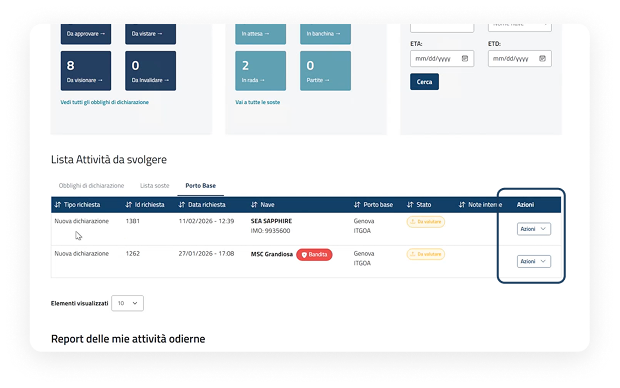
Notifiche
La sezione Notifiche consente di consultare gli eventi e gli aggiornamenti generati dal sistema e, ove previsto, di accedere direttamente alle relative attività per procedere con la lavorazione.
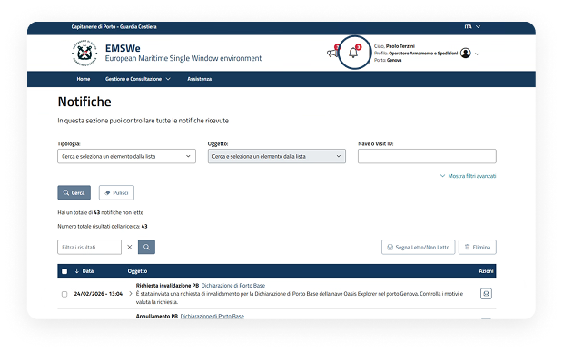
Ricerca richieste
Dall'elenco dei risultati restituiti dalla ricerca è possibile accedere al dettaglio delle richieste e utilizzare le azioni disponibili in funzione dello stato della richiesta e dei permessi associati al proprio profilo utente.
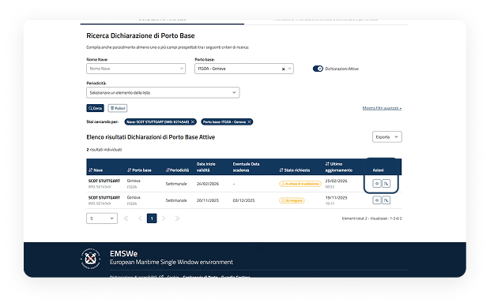
Gestione attività da svolgere
Presa in carico di un'attività
Lista attività dalla dashboard
All'interno delle sezioni della Dashboard sono disponibili le attività da svolgere. Per ciascuna attività è possibile accedere alle azioni previste dal sistema, tra cui la presa in carico, necessaria per avviarne la lavorazione.
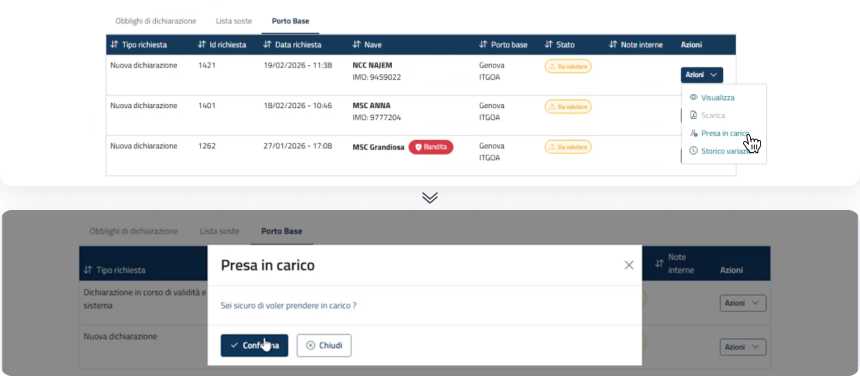
Dettaglio dell'attività
Accedendo al dettaglio dell'attività tramite l'azione "Visualizza", il sistema informa l'utente che, per poter procedere con la lavorazione della pratica, è necessario effettuarne la presa in carico. Per avviare la lavorazione, selezionare il pulsante "Prendi in carico".
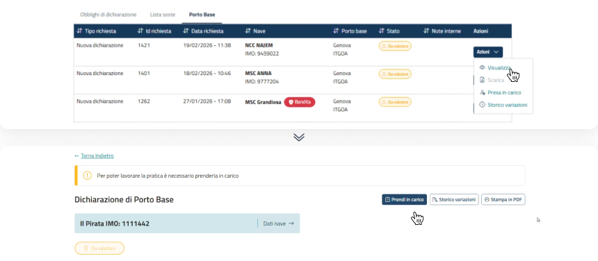
Gestione attività da svolgere
Presa in carico di un'attività già assegnata a un altro operatore
È possibile prendere in carico un'attività già assegnata a un altro utente; in tal caso, il sistema visualizza appositi alert e finestre di conferma.
Presa in carico di un'attività già assegnata
Accedendo a un'attività già presa in carico da un altro utente, viene visualizzato un messaggio di avviso che informa l'utente che l'attività è attualmente in lavorazione da parte di un altro operatore. È comunque possibile procedere con la presa in carico dell'attività, tenendo presente che eventuali modifiche non salvate dal precedente operatore andranno perse.
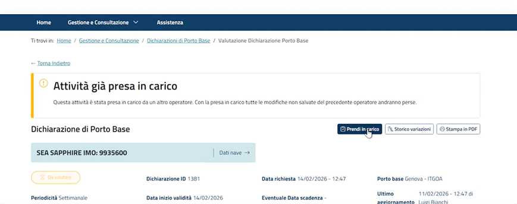
Finestra di conferma
Dopo aver selezionato il pulsante "Prendi in carico", il sistema visualizza una finestra di conferma nella quale viene indicato l'utente che ha già preso in carico l'attività. Per procedere con la riassegnazione e acquisire la responsabilità della lavorazione, selezionare il pulsante "Prendi in carico".
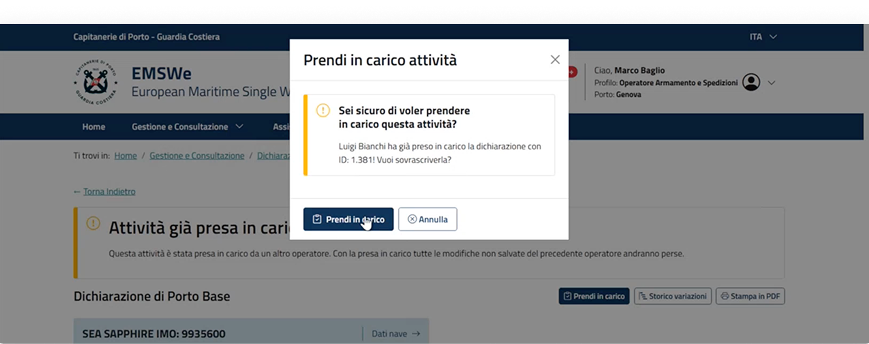
Fino alla presa in carico dell'attività, i pulsanti associati alle operazioni di lavorazione rimangono disabilitati.
Gestione attività da svolgere
Inserimento di Note interne
L'operatore CdP può inserire note interne direttamente dal dettaglio dell'attività, senza la necessità di prenderla preventivamente in carico. Le note consentono di registrare informazioni aggiuntive e di condividerle con gli altri operatori coinvolti nella gestione dell'attività.
Inserimento note interne
All'interno della pagina di dettaglio dell'attività è possibile aggiungere le note cliccando il pulsante "Inserisci nota".
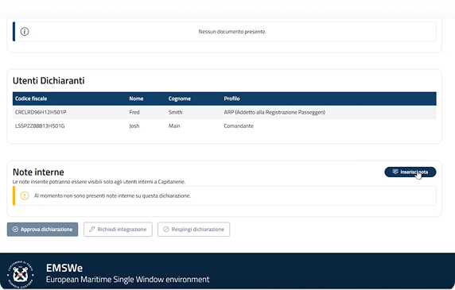
Aggiunta note a supporto
Il sistema mostra una finestra dove l'operatore CdP deve inserire obbligatoriamente le note e confermare tramite l'apposito pulsante.
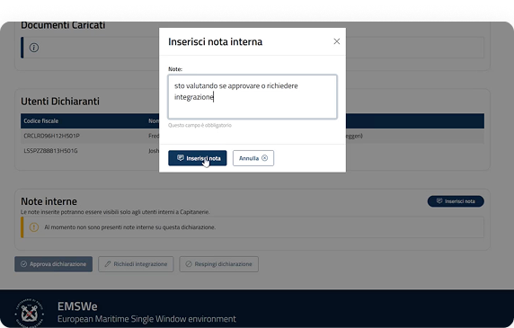
Note interne inserite
Dopo aver confermato l'inserimento della nota, quest'ultima sarà visibile, solo dagli operatori CdP, all'interno della sezione "Note interne".
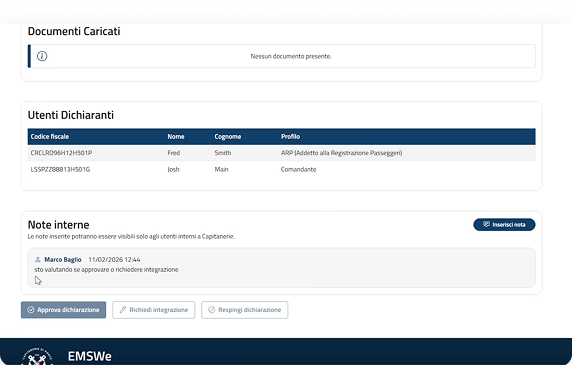
02.
Consultazione delle informazioni
Le funzionalità descritte in questa sezione consentono di consultare in modo rapido ed efficace le informazioni disponibili all'interno del sistema. Attraverso strumenti quali la visualizzazione dei dati dell'anagrafica nave, la gestione delle tabelle e i tooltip informativi, l'utente può accedere ai dettagli di interesse e approfondire le informazioni necessarie allo svolgimento delle proprie attività.
Attivazione dell'ordinamento delle voci in tabella
Gestione e consultazione delle tabelle
L'utente può ordinare i dati presenti in tabella per facilitare la consultazione e individuare più rapidamente le informazioni di interesse.
Individuazione della colonna e ordinamento
Per ordinare i dati, l'utente deve individuare l'intestazione della colonna interessata. Le colonne ordinabili sono contraddistinte dall'icona di ordinamento rappresentata da due frecce.
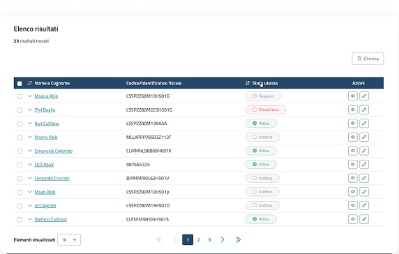
Attivazione dell'ordinamento
Cliccando sull'icona di ordinamento presente nell'intestazione della colonna, il sistema applica l'ordinamento ai dati visualizzati.
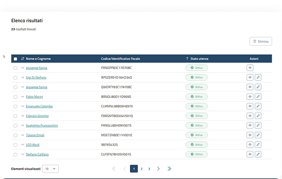
Azioni sulla tabella
Nella colonna "Azioni" sono disponibili le funzionalità operative associate a ciascun elemento dell'elenco. Le azioni visualizzate possono variare in base alla tipologia di tabella e alle specifiche operazioni previste per i dati gestiti.
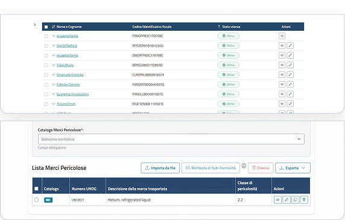
Un ulteriore clic sulla stessa icona consente di invertire la direzione dell'ordinamento, passando dall'ordine crescente a quello decrescente e viceversa.
Informazioni contestuali
Tooltip informativo
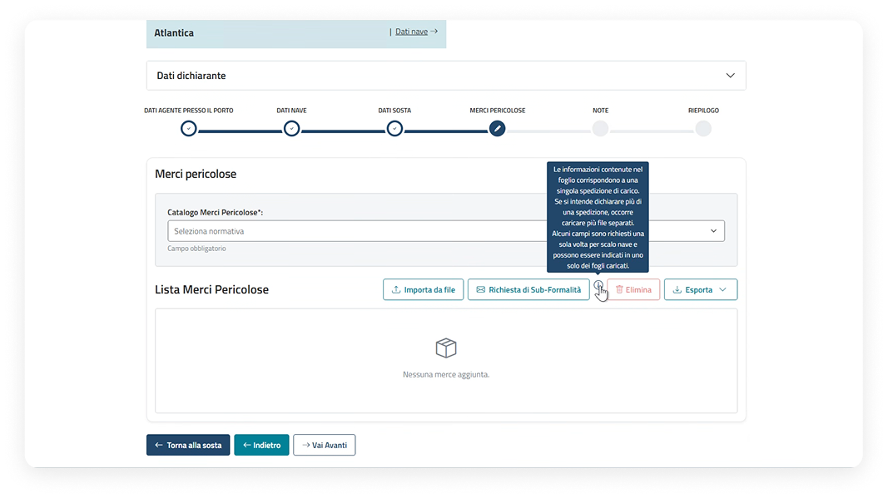
Il tooltip fornisce informazioni aggiuntive e contestuali su un elemento dell'interfaccia, aiutando l'utente a comprenderne il significato o le modalità di utilizzo.
Passando il cursore sull'icona informativa, il sistema visualizza un tooltip con una spiegazione aggiuntiva relativa alla funzionalità o al campo a cui è associato.
Il tooltip scompare quando il cursore viene spostato dall'icona, consentendo di accedere alle informazioni solo quando necessario senza appesantire la schermata.
03.
Compilazione dei dati
La presente sezione descrive le modalità di inserimento e aggiornamento delle informazioni all'interno del sistema. Vengono illustrate le funzionalità comuni di compilazione, i controlli applicati ai campi e le principali interazioni disponibili durante la gestione dei dati.
Compilazione dei dati
Regole generali
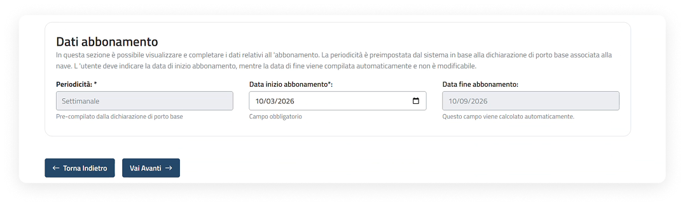
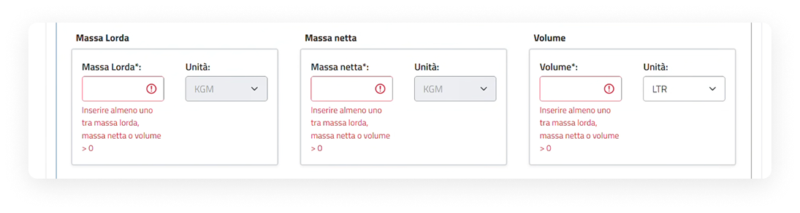
All'interno delle pagine del sistema sono disponibili testi informativi e indicazioni che supportano l'utente nella corretta compilazione dei dati. Le descrizioni illustrano le informazioni da inserire e le regole di compilazione associate ai singoli campi.
In corrispondenza dei campi possono essere visualizzate indicazioni specifiche, quali la valorizzazione automatica da parte del sistema, l'obbligatorietà del dato il cui campo è contrassegnato dal simbolo (*) mentre, nei casi di campi alternativamente obbligatori, è necessario valorizzarne almeno uno.
Compilazione dei dati
Campi obbligatori - errori di compilazione
I campi obbligatori sono identificati visivamente e devono essere compilati correttamente per poter procedere con le operazioni successive.
Identificazione dei campi obbligatori
I campi obbligatori sono contrassegnati da un asterisco (*) e accompagnati da un testo informativo che indica che la compilazione del campo è obbligatoria.
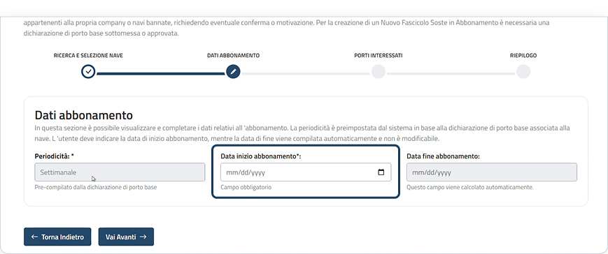
Indicazione dell'errore
Se l'utente indica un valore non valido, il campo viene evidenziato in rosso e viene visualizzato un messaggio che indica come compilare correttamente il campo, specificando il valore o il formato richiesto per evitare ulteriori errori.
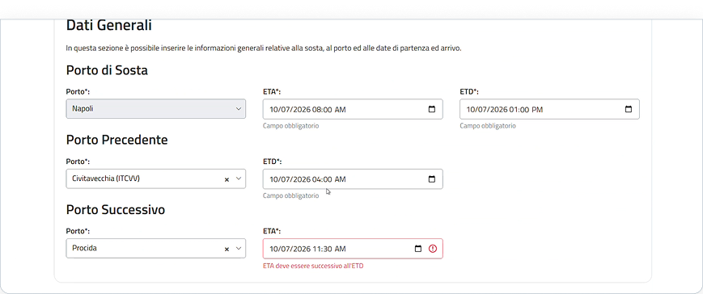
04.
Focus sugli stati della scansione antivirus dei documenti
Per ogni singolo documento caricato dall'utente, viene effettuata la scansione antivirus; di seguito vengono mostrati gli stati dell'esito della scansione.
Per ogni documento caricato nel sistema viene eseguita automaticamente una scansione antivirus al fine di verificarne la sicurezza prima che possa essere reso disponibile per il download o utilizzato nei processi di invio. L'esito della verifica è visualizzato nella colonna "Esito scansione antivirus" della tabella dei documenti caricati.
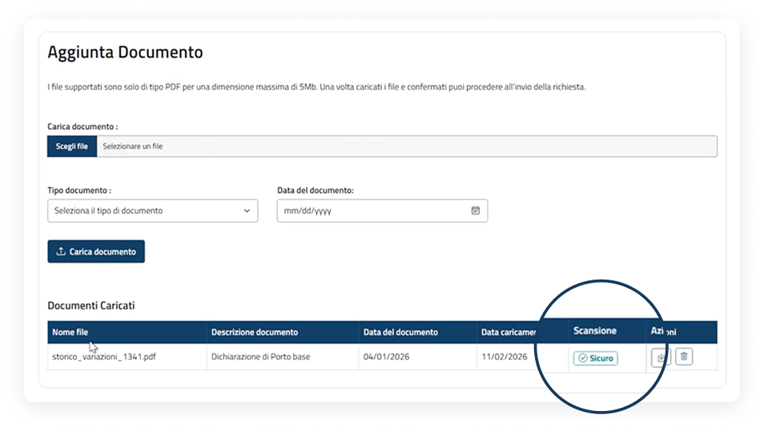
Gli stati che la scansione del documento può assumere sono:
SicuroLa scansione antivirus ha avuto esito positivo e il documento è stato verificato come sicuro. Il file può essere consultato e scaricato.
In corso
La scansione antivirus del documento è ancora in esecuzione e l'esito non è ancora disponibile.
Infetto
La scansione antivirus ha rilevato una potenziale minaccia. Il documento viene evidenziato come non sicuro e non può essere scaricato né utilizzato per l'invio della pratica.
Le richieste o pratiche che contengono documenti in fase di scansione rimangono nello stato "Invio in corso" fino al completamento delle verifiche antivirus. Se almeno un documento risulta infetto, la pratica assume lo stato "Invio fallito" e non viene inoltrata ai destinatari previsti.
05.
Assistenza
Una panoramica sul flusso di assistenza.
Punto di accesso
La voce di menù
Dalla dashboard è possibile accedere alle principali sezioni tramite le voci di menu.
Menu a tendina
Cliccando sulla voce "Assistenza" l'utente viene indirizzato alla pagina in cui potrà richiedere assistenza, consultare documentazione, visualizzare le FAQ e inviare richieste di supporto.
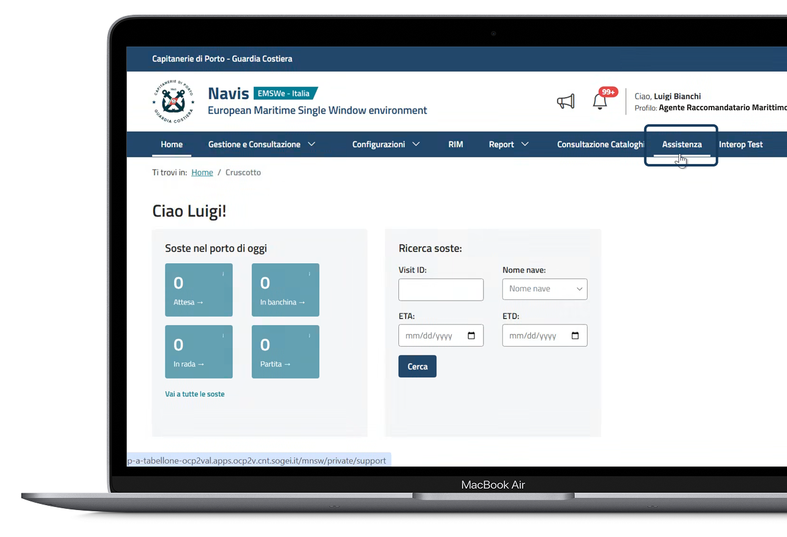
Funzionalità assistenza
Le voci all'interno del menu laterale sono:
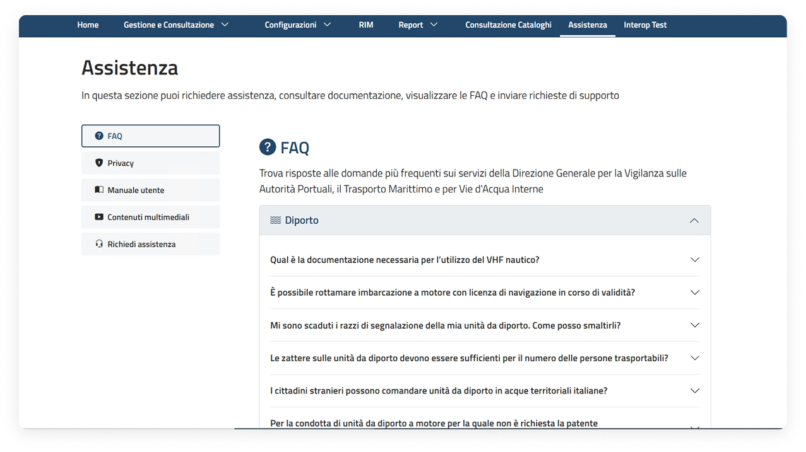
Assistenza
Visualizzazione dettaglio - FAQ
All'interno della pagina sono consultabili le FAQ che raccolgono le domande più frequenti, poste dagli utenti, sugli aspetti operativi, procedurali e funzionali più ricorrenti.
All'interno dell'accordion espandibile di ciascuna tematica, gli utenti possono consultare le risposte per trovare rapidamente le informazioni di interesse.
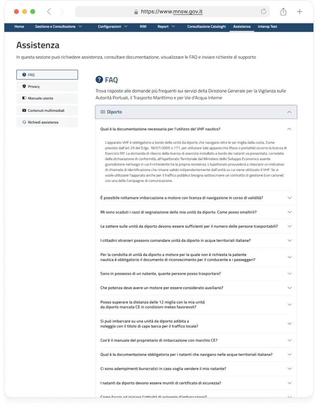
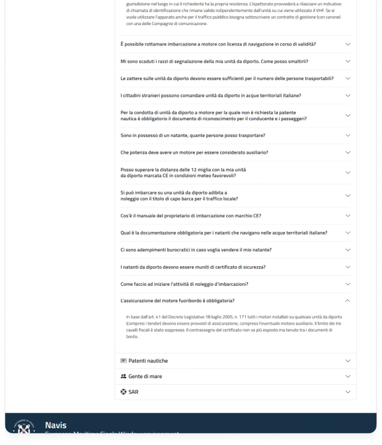
Assistenza
Visualizzazione dettaglio - Privacy
All'interno della pagina sono consultabili informazioni relative a:
- Informative sul trattamento dei dati personali degli utenti del sito;
- Titolare del trattamento dei dati personali;
- Responsabile per la protezione dei dati personali;
- Tipi di dati personali trattati, finalità e base giuridica del trattamento;
- Dati personali comunicati dall'utente agli indirizzi di contatto del titolare;
- Cookie e altri strumenti di tracciamento;
- Come disabilitare e abilitare i cookie;
- Controllo dell'interazione umana tramite verifica CAPTCHA;
- Destinatari della comunicazione dei dati personali;
- Periodo di conservazione dei dati personali;
- Luogo e modalità di trattamento dei dati, natura del conferimento dei dati;
- I diritti degli interessati.
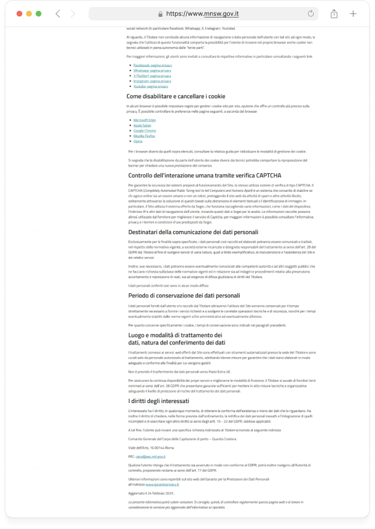
Assistenza
Visualizzazione dettaglio - Manuale utente
La sezione fornisce agli utenti un punto di accesso rapido e sicuro alla fruizione della documentazione ufficiale dedicata per ciascuna tipologia di profilo e necessaria per comprendere e utilizzare correttamente il sistema.
I manuali sono disponibili nei seguenti formati:
- PDF, che consente di effettuare il download del documento;
- HTML, che consente di navigare attraverso le diverse sezioni e capitoli del manuale.
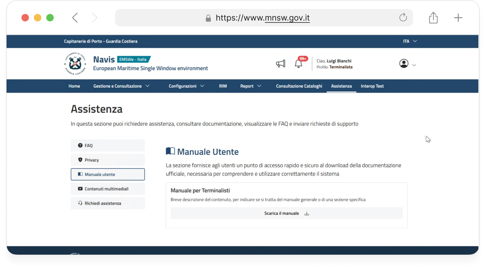
Assistenza
Visualizzazione dettaglio - Contenuti multimediali
La sezione consente all'utente di consultare i video tutorial per utilizzare al meglio la piattaforma EMSWe. L'utente può filtrare i contenuti per argomento e per anno, oppure utilizzare la funzione di ricerca per individuare rapidamente i video di interesse.
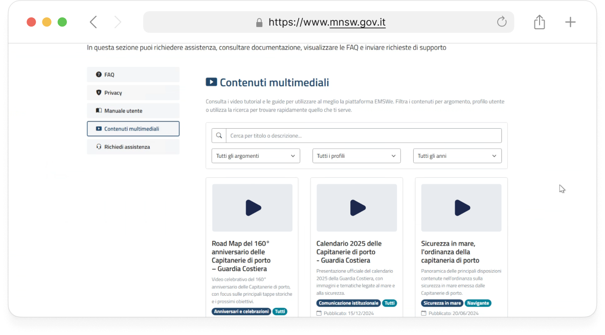
Assistenza
Visualizzazione dettaglio - Richiedi assistenza
La sezione consente all'utente di segnalare problematiche tecniche o inoltrare richieste di supporto operativo.
Per inviare una richiesta di assistenza, l'utente dovrà:
- Fornire i dati utente:
- Nome e Cognome sono pre-compilati e non modificabili;
- Email e telefono.
- Indicare le informazioni relative alla richiesta:
- Tipologia segnalazione;
- Ambito funzionale (in base alla tipologia segnalazione);
- Descrizione;
- Allegare un documento per illustrare in maniera più esaustiva la problematica.
Infine, cliccare il pulsante "Invia richiesta".
A conferma dell'avvenuto inoltro, il sistema visualizza un messaggio di conferma e comunica il numero identificativo del ticket generato.
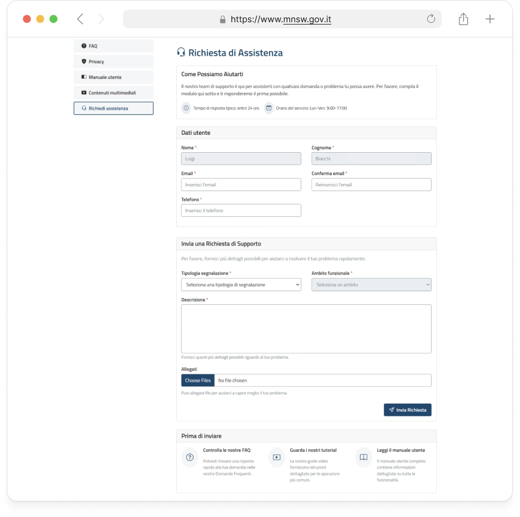
06.
Tipologie di alert
Una panoramica sulle tipologie di alert presenti a sistema.
Struttura del componente
Il componente alert è composto da elementi visivi e testuali che lavorano insieme per comunicare all'utente un'informazione rilevante in modo immediato, chiaro e riconoscibile.
Colore
Utilizza il colore per rendere immediatamente riconoscibile la tipologia di messaggio.
Icona
Identifica visivamente la tipologia di messaggio e richiama l'attenzione dell'utente.
Titolo
Comunica in modo sintetico l'informazione o l'azione principale richiesta all'utente.
Descrizione
Fornisce il contesto e le informazioni aggiuntive necessarie per comprendere il messaggio.
Icona di chiusura*
*Se presente, consente all'utente di chiudere l'alert e rimuoverlo dalla visualizzazione.
Semantica dell'alert
Il colore è un elemento distintivo della semantica dell'alert e contribuisce a comunicarne immediatamente il significato. Ogni colore identifica una specifica tipologia di messaggio e il relativo livello di attenzione richiesto all'utente.
Messaggio di conferma (Successo)
Messaggio che conferma il corretto completamento di un'operazione eseguita dall'utente.
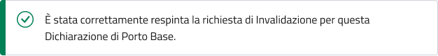
Messaggio di errore bloccante (Error)
Segnalazione di una condizione che impedisce l'esecuzione o il completamento dell'operazione fino alla risoluzione dell'anomalia.
Messaggio di avviso (Warning)
Segnalazione di una condizione che richiede attenzione o verifica da parte dell'utente, senza impedire il completamento dell'operazione.
Messaggio informativo (info)
Comunicazione fornita dal sistema per informare l'utente su uno stato, un evento o un risultato, senza richiedere alcuna azione.
Esempio contestualizzato
Messaggio di conferma (Successo)
Notifica visualizzata dall'applicativo a seguito del completamento positivo di un'operazione. Il messaggio conferma che i controlli previsti sono stati superati, i dati sono stati acquisiti correttamente e il processo è stato portato a termine con esito favorevole.
Possibili varianti
Ruoli eliminati con successo.
Salvataggio della bozza avvenuto con successo.
È stata correttamente respinta la richiesta di Invalidazione per questa Dichiarazione di Porto Base.
Sosta eliminata con successo.
Modifiche alla sosta avvenute con successo.
Importazione del file avvenuta con successo.
Esempio contestualizzato
Messaggio di errore bloccante (Error)
Messaggio generato dall'applicativo per segnalare una condizione che impedisce il completamento dell'operazione richiesta. La presenza dell'errore richiede l'intervento dell'utente per correggere i dati o risolvere l'anomalia prima di poter proseguire con il processo.
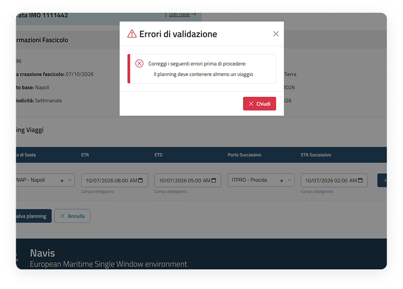
Possibili varianti
Questa nave risulta bannata.
Si sta respingendo questa richiesta di Invalidazione Dichiarazione di Porto Base
Specificare nel campo di testo sottostante i motivi per i quali la richiesta verrà respinta.
Porto di scalo successivo già presente per l'allegato MARPOL definito.
ATA (Orario di arrivo effettivo) non valido per questa operazione.
Si prega di compilare tutti i campi obbligatori.
Si è verificato un errore imprevisto durante l'elaborazione della richiesta. L'operazione non è stata completata: riprovare e, se il problema persiste, segnalare all'assistenza l'operazione svolta e l'orario in cui si è verificata.
Errore di caricamento: Errore nell'estrazione dei dati. Campi obbligatori mancanti: Porto di sosta, ETA, ETD, Porto successivo
Esempio contestualizzato
Messaggio di avviso (Warning)
Notifica generata dall'applicativo per evidenziare situazioni che, pur non configurando un errore bloccante, potrebbero richiedere una valutazione da parte dell'utente. Il messaggio di warning non interrompe il processo in corso, ma informa circa la presenza di condizioni particolari, dati incoerenti o possibili impatti derivanti dall'operazione richiesta.
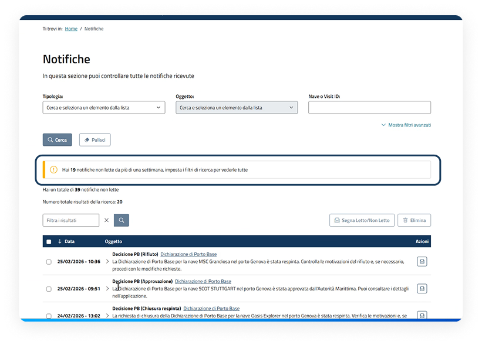
Possibili varianti
Si sta richiedendo un'integrazione
Specificare nel campo di testo sottostante la motivazione in modo che il declarant possa integrare con quanto chiesto.
La nave di questa sosta non è associata al tuo profilo. Salvando le modifiche, il tuo profilo verrà aggiornato con l'associazione a questa nave.
Vuoi procedere con il salvataggio?
Visit ID: ITGOA25000046
Per la nave Piacere è stata trovata una sosta precedente con i seguenti dati.
Sei sicuro di voler eliminare questa sosta?
Una volta eliminata, la sosta non sarà più disponibile.
Si sta richiedendo la rettifica della sosta al collaboratore
Specificare nel campo di testo sottostante la motivazione della richiesta di rettifica della sosta.
Attività già presa in carico
Questa attività è stata presa in carico da un altro operatore. Con la presa in carico tutte le modifiche non salvate dal precedente operatore andranno perse.
Esempio contestualizzato
Messaggio informativo (info)
Notifica visualizzata dall'applicativo con finalità esclusivamente informative, volta a comunicare all'utente dati, stati, eventi o indicazioni relativi all'utilizzo dell'applicativo, senza segnalare anomalie né influire sull'esecuzione dell'operazione in corso.
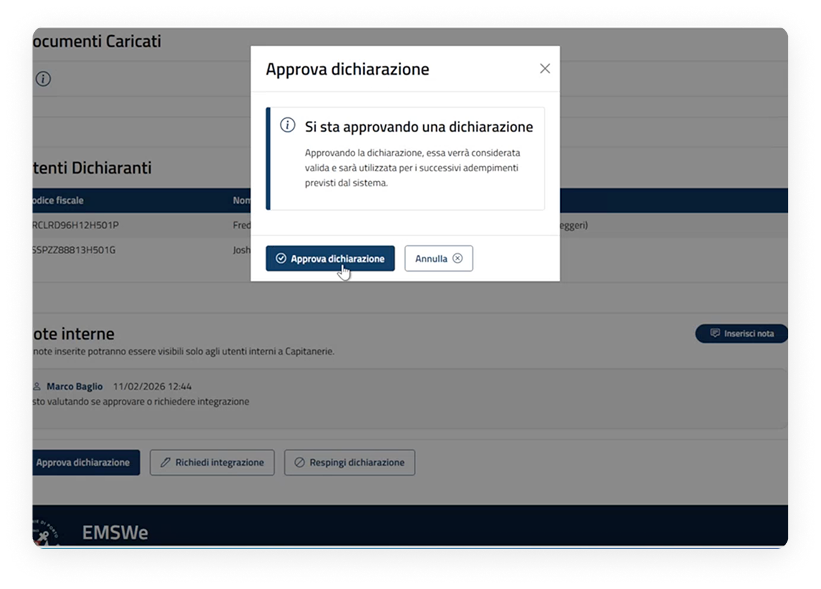
Possibili varianti
I dati contenuti nella presente anagrafica sono frutto degli obblighi di dichiarazione riportati dai dichiaranti e non sono certificati.
Compila i campi obbligatori per creare un nuovo piano accosti. Il piano verrà creato in stato bozza e potrà essere modificato successivamente.
Caricamento da un file CSV
Il file deve essere strutturato come segue:
- contenere la seguente intestazione formata dai campi "PROFILE_CODE", "ROLE_CODE", "ASSOCIATED", "REPORTING_OBLIGATION_CODE";
- il carattere separatore di colonna è la virgola;
- tutti i campi sono obbligatori.
Si sta approvando una richiesta di Invalidazione
Approvando la richiesta, la dichiarazione verrà invalidata e il dichiarante dovrà procedere a generarne una nuova.
Tipologia di navi gestibili tramite questa funzionalità
- Navi da diporto dell'Unione Europea destinate a uso commerciale e navi destinate esclusivamente al noleggio per finalità turistiche che non trasportano più di dodici passeggeri (DM 27 aprile 2017 art. 4 comma 1, lettera b);
- Navi da diporto di Paesi non europei destinate a uso commerciale (DM 27 aprile 2017 art. 4 comma 4).
Messaggio di conferma
Messaggio generato dal sistema per richiedere all'utente una conferma esplicita prima dell'esecuzione di un'operazione che potrebbe produrre effetti rilevanti, modificare dati già registrati o determinare azioni non immediatamente reversibili. L'operazione viene eseguita solo a seguito della conferma da parte dell'utente.
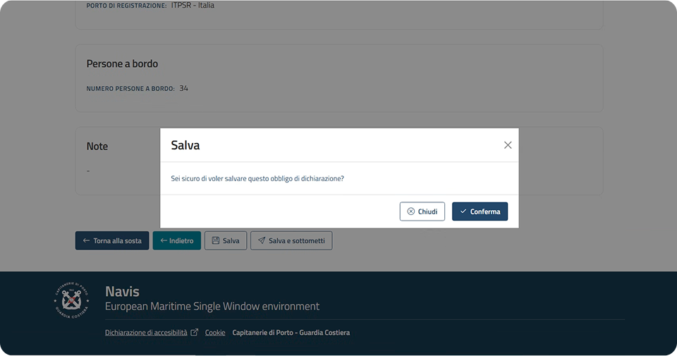
L'utente può confermare l'operazione effettuata.
Chiudi
L'utente chiudendo, annulla l'operazione effettuata.
07.
Icone
Una panoramica sulle tipologie di icone presenti a sistema.
Elenco icone presenti a sistema e utilizzo
La libreria di icone definisce un linguaggio visivo coerente e riconoscibile, garantendo uniformità nell'interfaccia e facilitando la comprensione delle diverse funzionalità.
Azione associata:
- Sottometti
- Richiesta sub-formalità
- Salva delega/sosta
- Invia
Azione associata:
- Modifica
- Richiesta di integrazione
Azione associata:
- Visualizza
Azione associata:
- Compila profilo
- Compila richiesta
Azione associata:
- Associazione
Azione associata:
- Integrazione effettuata
- Approvazione
Azione associata:
- Respinta
Azione associata:
- Aggiunta
Azione associata:
- Eliminazione
Azione associata:
- Ricerca
Azione associata:
- Pulisci (ricerca)
Azione associata:
- Torna indietro
Azione associata:
- Vai avanti
Azione associata:
- Tooltip informativo
Azione associata:
- Operazioni
Azione associata:
- Carica documento/file
Azione associata:
- Scarica
Azione associata:
- Salvataggio
Azione associata:
- Prendi in carico
Azione associata:
- Rilascia task
Azione associata:
- Annulla
- Chiudi
Azione associata:
- Sospensione
Azione associata:
- Riattivazione
Azione associata:
- Dettaglio iter
Azione associata:
- Rilascia task